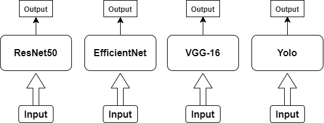

Normal pepper seeds and damaged are two categories of pepper seeds commonly found in the pepper seed processing.
Normal pepper seeds can be visually distinguished by the distinctive white to yellowish color and round shape for white pepper seed variants.
In the sorting process, pepper seeds are still manually sorted by farmers using their hands. Sorting pepper seeds is important to separate normal pepper seeds from defective or damaged ones.
Manual sorting of pepper seeds is time-consuming, especially when the number of pepper seeds to be sorted is significant.
Therefore, this can be confusing for farmers to sort high-quality pepper seeds from damaged ones. This research aims to propose a deep learning model that can accurately classify high-quality pepper seeds and damaged pepper seeds.
Several deep learning models such as YOLO, EfficientNet, ResNet50, and VGG16 will be evaluated based on accuracy, precision, and sensitivity.
We would like to introduce a new dataset called USK-PEPPER which consists of 2 classes of pepper seeds, namely normal pepper seeds and damaged pepper seeds.
This dataset comprises 1000 images that were manually collected by taking pictures of pepper seeds through a digital camera.
This dataset can be used for two tasks, classification and detection, to distinguish between normal and damaged pepper seeds, as well as to recognize each of the two types of pepper seeds.
Based on a survey of the experiences of several Indonesian farmers, the sorting of pepper seeds is still done manually using their hands. This process takes a very long time to separate good pepper seeds from damaged ones, and not all of the pepper seeds can be sorted evenly. Direct identification of pepper seeds is somewhat difficult to do due to their small size, which makes sorting a bit hampered without adequate technology.. To classify between good and damaged pepper seeds, we utilized a deep learning approach. To achieve the best results, several CNN architectures such as ResNet50, VGG16, EfficientNet, and Yolo were used for analyzing the results. CNNs are commonly used in the field of image processing and computer vision to recognize objects in images, classify image categories, and solve machine vision-related problems.
The tested architectures such as ResNet50, EfficientNet50, VGG16, and Yolo will be compared with each other. Each of these models has its own advantages in image classification. One similarity shared by these models is that they are used for computer vision tasks, especially image and object classification. All of these models have been proven to be successful in their tasks and are often used as benchmarks in computer vision research. The image size used has been modified to 224 x 224 pixels for all tested models.. 
USK-Pepper is a one of public datasets that is open for everyone. For detailed information about the dataset, please see the technical report linked below.
| Categories | Total | Dimensions |
|---|---|---|
| Normal Pepper | 500 | 224 x 224 pixels |
| Damaged Pepper | 500 | 224 x 224 pixels |
You can contact us via E-mail for question about the dataset and paper
This is the following publications use our dataset. Please contact us if you are using our dataset and we will add your paper to the list.